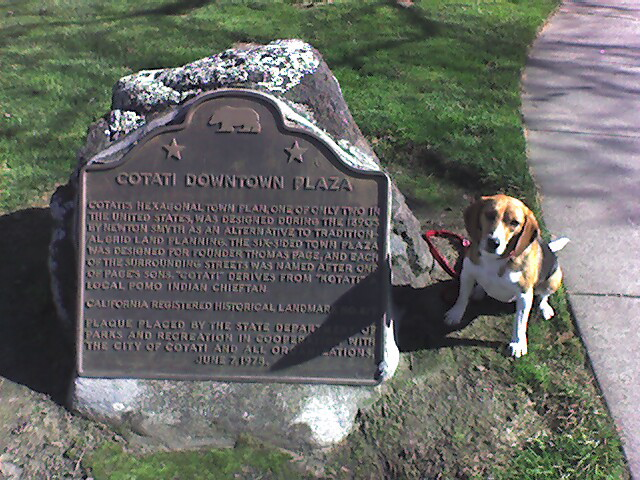

<--Previous
Up
Next-->

Cotati historical marker
En route to the Alsace Varietal Festival in Anderson Valley, we stopped to see Cotati, one of only two towns in the United States with a hexagonal plan.